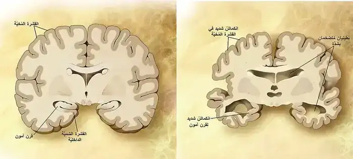
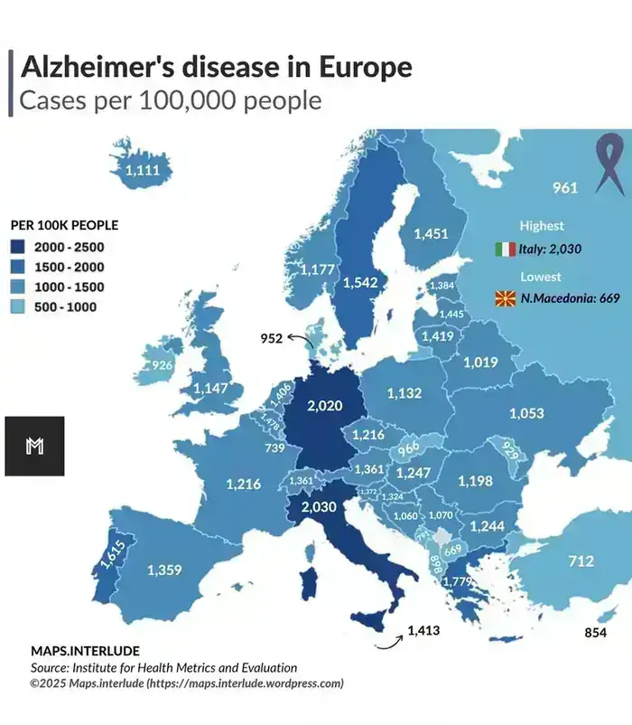
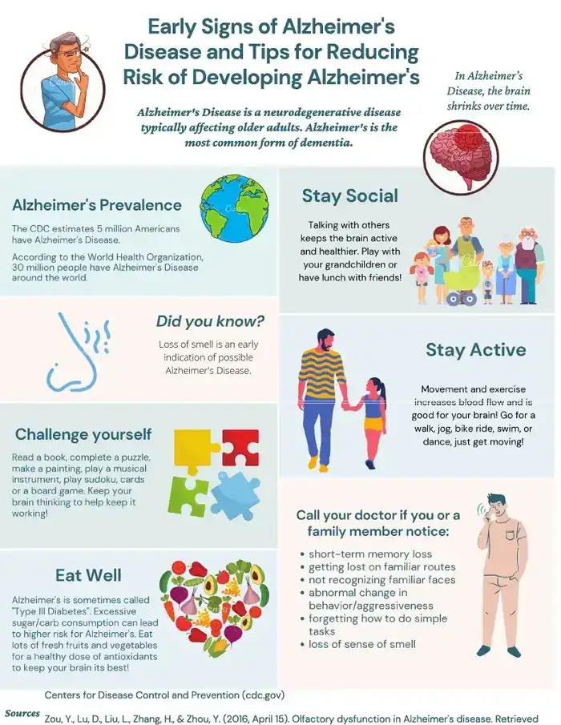

The orthodoxy
For thirty years the dominant account has been the amyloid cascade: amyloid-beta fragments clump into plaques, plaques trigger tau tangles inside neurons, neurons die, memory goes. It is a clean chain, and it produced a generation of drugs designed to clear amyloid.
Maps, diagrams and images






Those drugs mostly failed. Then, in the last few years, two of them worked — modestly. That is the fact that reorganises the whole argument.
What the antibodies changed
Lecanemab and donanemab, both approved in the United States, remove amyloid from the brain and slow measurable decline by roughly a quarter to a third on clinical scales over 18 months. The effects are real, statistically robust and small. They also come with a serious risk: amyloid-related imaging abnormalities, including brain swelling and micro-haemorrhages, which require monitoring.
Read carefully, this is evidence for amyloid mattering and against the simplest version of the story. If amyloid were merely a bystander, removing it should do nothing. If it were the whole cause, removing it should do much more than 27%.
"Amyloid is a protective response" is a hypothesis, not a finding. The infection account (herpes simplex, P. gingivalis) has real supporting work, but no trial has shown that treating an infection changes dementia course.
The fraud story is narrower than it is usually told. An investigation published by Science in 2022 reported manipulated images in a 2006 paper on a specific amyloid assembly; that paper was subsequently retracted. It did not falsify the amyloid cascade, and it does not mean the plaques are irrelevant.
"Type 3 diabetes" is a metaphor with a real observation inside it. Brain insulin signalling is impaired in Alzheimer's. Intranasal insulin trials have mostly failed to produce benefit, which is the part usually left out.
Amyloid alone does not equal dementia. A substantial fraction of people with plaques on a PET scan are cognitively normal. Something else — vascular damage, tau spread, inflammation, resilience — decides who converts.
The better-supported shift
The most useful change in the last decade is not a rival theory but a change of timing. Biomarkers — especially plasma p-tau217 — now detect the disease process years before symptoms. That reframes Alzheimer's as a decades-long process with a long silent phase, which is why prevention trials are the interesting frontier and why "cure the plaques at the end" was always likely to disappoint.
It also explains the field's loudest argument. If the process begins twenty years before memory loss, then a drug given at diagnosis is being given very late, and a 27% slowing in late disease is not obviously a failure of the hypothesis — it may be a failure of timing. That reading is respectable and unproven; the prevention trials will decide it.
The competing accounts, honestly weighted
- Infection and immunity — genuine epidemiological signals, plausible mechanism, no successful intervention yet.
- Vascular contribution — strong and underweighted: most dementia in old age is mixed pathology.
- Tau spread — correlates better with symptoms than amyloid does, which is why tau PET is now central.
- Metabolic/insulin — real signal, weak therapeutic record.
- Amyloid — necessary-ish, insufficient, and the only target with disease-modifying drugs that work at all.
What would settle it
A prevention trial in biomarker-positive people with no symptoms, showing that clearing amyloid before damage begins prevents decline. That is running now. Until it reports, the honest position is the uncomfortable one: the leading hypothesis is neither vindicated nor dead, and the field spent two decades overconfident in both directions.
Sources for this page
- U.S. FDA, traditional approval of lecanemab for early Alzheimer'swww.fda.gov
- Science (2022), investigation into image manipulation in a 2006 amyloid paperwww.science.org
- U.S. National Institute on Aging, Alzheimer's disease fact sheetwww.nia.nih.gov
- Itzhaki et al., the infection hypothesis of Alzheimer's diseasepubmed.ncbi.nlm.nih.gov
- Wikipedia, “Amyloid beta” and “Alzheimer's disease” — the cascade and its critiquesen.wikipedia.org
Open resources on this topic
- BookAnosmia in Alzheimer's Disease — Laura H. Coker · 1990 (Internet Archive, free to read)
- BookAlzheimer's disease — Willett, Edward, 1959- · 2002 (Internet Archive, free to read)
- BookCoconut Oil For Alzheimer’s And Dementia The Evidence (Internet Archive, free to read)
- PapersOpen-access articles: DOAJ · PubMed Central · Internet Archive Scholar
- BooksPublic-domain and borrowable copies: Open Library · Project Gutenberg · Google Books
Cite this page
Momin, S. (2026). Alzheimer's. The Larger World Archive. https://drsamonline.github.io/LARGE_GLOBE/alzheimers-disease.htmlMomin, Sohil. “Alzheimer's.” The Larger World Archive, 2026, https://drsamonline.github.io/LARGE_GLOBE/alzheimers-disease.html.Momin, Sohil. “Alzheimer's.” The Larger World Archive, 2026. https://drsamonline.github.io/LARGE_GLOBE/alzheimers-disease.html.@misc{alzheimers2026alzheimers,
author = {Momin, Sohil},
title = {Alzheimer's},
year = {2026},
howpublished = {The Larger World Archive},
url = {https://drsamonline.github.io/LARGE_GLOBE/alzheimers-disease.html},
note = {Last reviewed 20 November 2026}
}Last reviewed 20 November 2026 · Corrections policy · this page is not peer reviewed